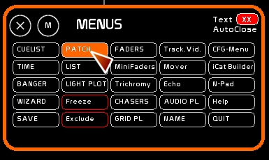
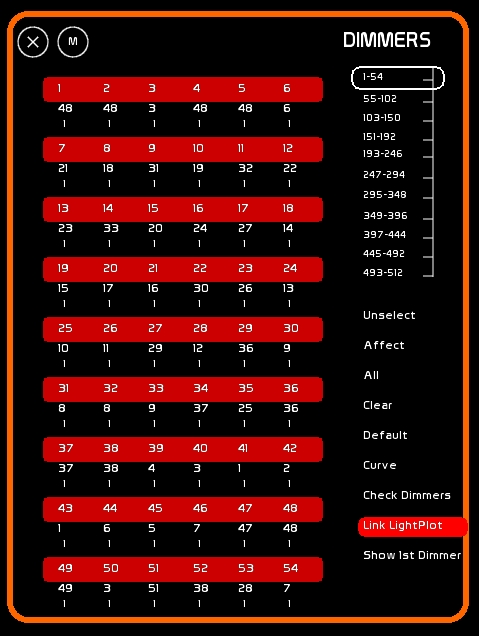
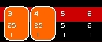
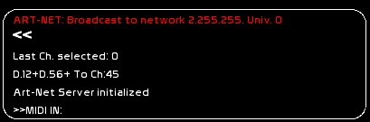
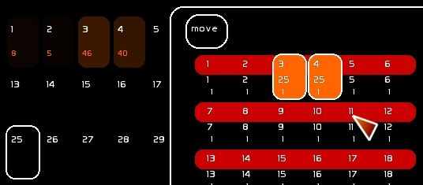
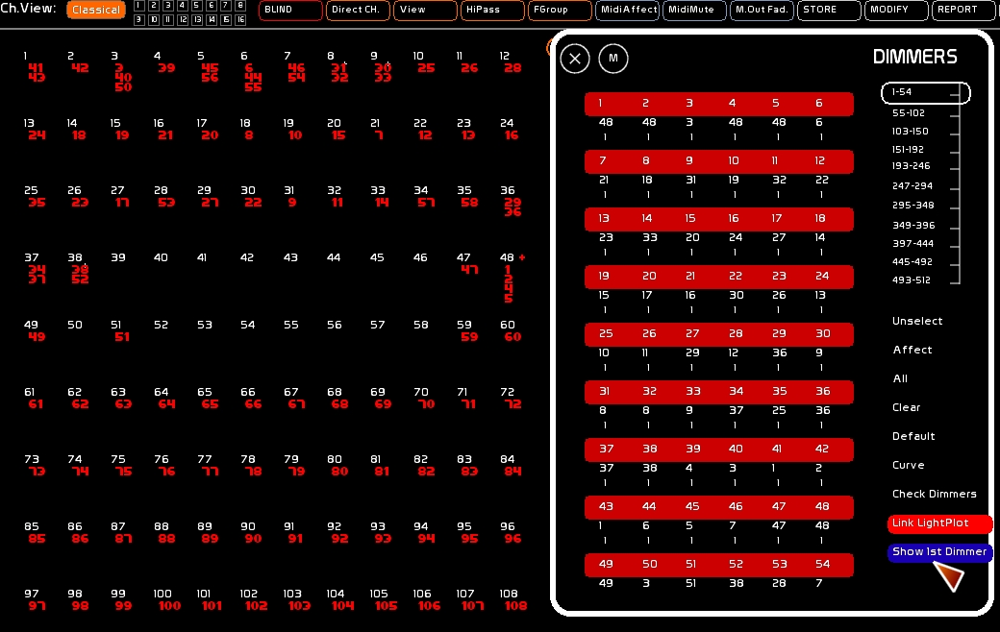
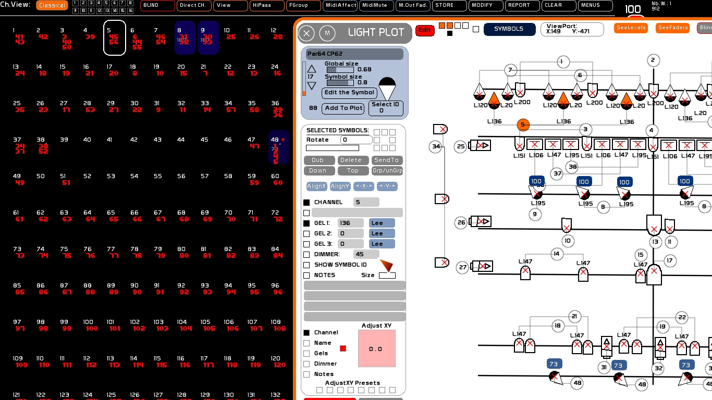
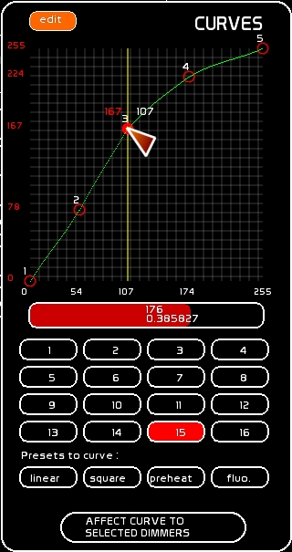
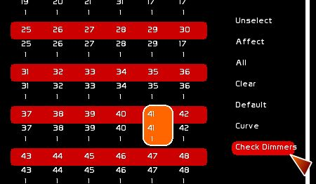

Le patch électronique permet:
C'est l'affectation de gradateurs à un circuit.
C'est l'utilisation de courbes.

On notera dans la fenêtre de retour d'infos:
Ici le Dimmer 12 et le dimmer 56 ont été affecté au channel 45

La sélection des gradateurs se fait sur le même principe que celle des circuits:
En sélectionnant ou désélectionnant les gradateurs d'un click, et en naviguant via un ascenceur vertical dans les 512 gradateurs.
Et clickant les fonctions du patch :
[unselect] pour déselectionner tous les gradateurs sélectionnés
[all] pour sélectionner tous les gradateurs (de 1 à 512)
Ex: Grada 5 en circuit 3: [3][+] [5][SHIFT][ENTER]
La touche d'attribution de niveau devient avec SHIFT une attribution de grada.
Au clavier, on sélectionnera les gradateurs ( dimmers) 4 et 6 en tapant [4][SHIFT][+] [6][SHIFT][+]
On pourra tout sélectionner en faisant [SHIFT][Y]
On pourra tout déselectionner en tapant [SHIFT][ESC]
Faire une sélection de gradateurs chainée en utilisant [SHIFT][TAB]: [12][SHIFT][+][18][SHIFT][TAB]
Déselectionner un gradateur avec [SHIFT][-].
[SHIFT][ENTER] pour attribuer les gradateurs sélectionnés au dernier circuit sélectionné.
clicker le circuit désiré dans la zône circuit.
puis clicker [AFFECT]
puis clicker le gradateur auquel affecter ce circuit
reclicker [AFFECT] puis un autre gradateur pour en rajouter un
ne pas oublier de faire [ESC] pour déselectionner le circuit
sélectionner le circuit à affecter.
Puis l'affecter en tapant [SHIFT][ENTER].
Dans le cas d'un patch sérieux, avec feuille de patch et une grande série d'affectation, une affectation clavier se fera ainsi:
sélection des gradateurs à affecter: [3][SHIFT][+][4][SHIFT][+]
sélection du circuit: [25][+]
affectation: [SHIFT][ENTER]

clicker le gradateur désiré
puis clicker [CLEAR]
sélectionner le/les gradateurs
taper [SHIFT][o]
clicker le gradateur désiré.
puis clicker [DEFAULT]
sélectionner le/les gradateurs
taper [SHIFT][I]
! où on en déduit que mettre tout son patch droit équivaut à faire [SHIFT][Y][SHIFT][I] ! où on en déduit que pour effacer tout le patch et tout désaffecter il faut faire [SHIFT][Y][SHIFT][O]
Les touches [GAUCHE] et [DROITE] permettent de sélectionner le circuit précédent, ou le circuit suivant.
[CTRL][GAUCHE] ou [CTRL][DROITE] envoient le circuit à Full.
Si la fenêtre de Patch est ouverte, les gradateurs affectés à ce circuit seront sélectionnés.
Le mode [SHOW 1ST DIMMER] permet d'afficher dans l'espace circuits les 4 premiers gradas affectés à un circuit. Au dessus de 4 gradas affectés à un circuit un petit [+] s'affiche.
Pour l'enclencher clicker [SHOW 1ST DIMMER].
Cette option est notamment fort utile avec [LightPlot].

Le mode [LINK LIGHTPLOT] permet de patcher et dépatcher depuis le plan lumière, et de prendre en considération les changements faits dans le patch.
Pour l'enclencher clicker [LINK LIGHTPLOT].
Voir: Light Plot: le plan lumière intégré

Une courbe est donc un trichage du signal, faite de manière purement logicielle, de façon à compenser l'émission linéaire d'un niveau, à l'arrondir, le brider, ou l'incurver…
On accède à l'éditeur de courbes en clickant [Curve]

La courbe du signal est ainsi représentée:
-en blanc le niveau du signal issu des circuits
-en rouge le niveau du signal triché, en sortie Dmx
Il y a 5 points de contrôle que l'on peut déplacer sur la grille.
Ces contrôles peuvent être déplacés. La courbe les reliant peut être modifiée selon une courbe de béziers dont le facteur est modulable sur l'ensemble de la courbe ( tirette rouge sous le tableau).
Il y a 16 courbes d'enregistrables dans White Cat. La courbe 1 est la courbe par défaut affectée à chacun des dimmers. Vous ferez attention à l'éditer que si vraiment désiré.
Dans le cas d'un besoin de nettoyage de courbe, on peut charger un modèle de courbe.
[linear] pour la courbe droite [square] pour la courbe télé [preheat] pour une courbe préchauffant le filament des PARS [fluo] pour une courbe dédiée aux fluorescents graduables
Il faut charger le circuit qui pilote le gradateur pour lequel on édite la courbe, dans un Master.
Voir en profondeur: la section L'espace Faders pour charger une sélection de circuits à un niveau donné dans un master.
0.7.5 Le check gradateurs se fait en clickant [Check Dimmers]
L'envoi se fait par défaut à 75% de façon à préserver les lampes de 5kw et de 2kw. Ce niveau peut être modifié depuis la fenêtre de configuration générale.
Vous ne voyez rien sur l'écran: le signal est by-passé directement dans le buffer dmx envoyé à l'interface.

Pour tester les circuits et voir si ils sont bien patchés, clicker le premier circuit à tester, dans l'espace circuits.
Puis avec les flèches, faire [CTRL][LEFT] ou [CTRL][RIGHT] au clavier.
Vous vous déplacez ainsi dans les circuits en faisant briller à 100% chaque circuit (Ce niveau peut être modifié depuis la fenêtre de configuration générale). Cette procédure, dite CHECK CHANNEL, peut être aussi utile pour vérifier avant le début d'un spectacle qu'aucune lampe n'est morte lors des répétitions ou de la représentation de la veille.